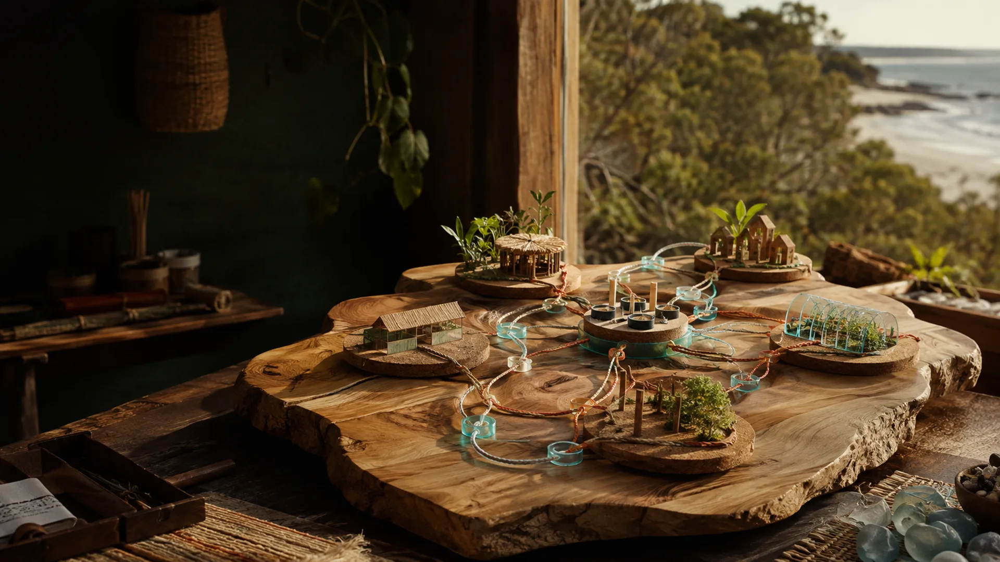

Country, family and cultural decisions
Site invitation, culture, ceremony, restricted knowledge and cultural decisions stay with the relevant people. Country is not a company shareholding or charity asset.

Donations, grants, investment, trading income, member work and Country involve different people, agreements and organisations.
Site invitation, culture, ceremony, restricted knowledge and cultural decisions stay with the relevant people. Country is not a company shareholding or charity asset.
The 41/39/20 working proposal is for suitable income, investment and commercial activity at 7 Mile.
One or more bodies might receive donations, apply for grants and deliver eligible charitable work such as recovery, safety, culture, education, housing, aged care or research.
If formed, the co-op might support employment, training, members, shared equipment, transport and administration between willing participants.
The existing sole-trader business provides research, technology, websites, planning and communication while other structures are explored.
C-Hour explores recognition of genuine voluntary contribution. Community wealth and mutual structures explore shared assets and locally retained value.
The working ownership split is 41 per cent, 39 per cent and 20 per cent. The proposed split would produce an Indigenous-majority company focused on suitable 7 Mile commercial activity.
A defined business receives investment, earns trading income, pays costs and wages, reinvests and distributes any lawful return under agreed terms.
The receiving organisation, obligations and permitted use change with the source of funds.
Gift used for an agreed charitable purpose. Tax deductibility depends on the final entity and endorsement, not the word charity.
Restricted funding tied to approved activities, milestones, evidence and reporting.
Capital enters a business with agreed risk, rights, returns and a scope that does not include ownership of Country.
Accommodation, services, products or contracts pay costs, wages, reinvestment and any lawful distribution under that vehicle.
The final purpose and activities shape the legal form, board, eligibility and reporting.
A not-for-profit body may receive donations. Tax deductibility requires the relevant endorsement and does not follow automatically.
Surplus stays with the organisation's stated purpose and operating responsibilities rather than becoming a private return.
Recovery, safety, culture, education, housing, aged care and research need different skills, safeguards, records and reporting.
Tools, vehicles, records and other shared assets need a holder, access rules, maintenance responsibility and an exit arrangement.
Services moving between a company, not-for-profit body, co-op or sole trader need clear contracts and responsibilities.
Each agreement needs a practical handover for access, records, equipment, unfinished work and money if a site or participant leaves.